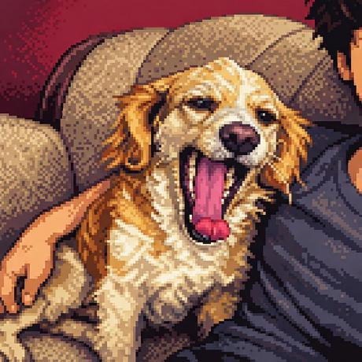

Programación 3
Backend en Java: capas DAO / BL / Model, JDBC, acceso a base de datos, servicios web SOAP y REST, concurrencia, reportes con JasperSoft y despliegue en la nube. También C#.
Estudiante de Ingeniería Informática en la PUCP (Lima). Me enfoco en backend y, a futuro, en inteligencia artificial.
Ver mis proyectos
AEstoy construyendo una base sólida en ingeniería de software, bases de datos, arquitectura de sistemas y fundamentos de computación. Hoy me centro en backend; mi meta es trabajar como ML/AI Engineer y quizá hacer una maestría en IA o Data Science.
Backend en Java: capas DAO / BL / Model, JDBC, acceso a base de datos, servicios web SOAP y REST, concurrencia, reportes con JasperSoft y despliegue en la nube. También C#.
Diseño y documentación de arquitecturas: atributos de calidad, notación C4 y UML, ADRs, arc42 y estilos como capas, microservicios y orientado a eventos.
Circuitos combinacionales y secuenciales en Logisim, CPU, memorias y programación en ensamblador NASM x86-64 sobre Linux (syscalls, stack, GDB).
Procesos e hilos, sincronización (semáforos, monitores), planificación de CPU y tiempo real, memoria virtual y sistemas de archivos, con prácticas en Linux.
Repositorio académico con trabajos, prácticas y proyectos de la carrera.
PúblicoAplicación Pomodoro construida para aprender React.
Sistema académico con backend en Java y base de datos MySQL.
Proyecto personal en Java.
Asistente de escritorio. Proyecto personal.
Estoy abierto a prácticas, proyectos y conversar sobre backend e IA.
GitHub LinkedIn